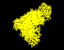

References
References
- 1
-
Helmut Heller, Michael Schaefer, and Klaus Schulten.
Molecular dynamics simulation of a bilayer of 200 lipids in the gel
and in the liquid crystal phase.
J. Phys. Chem., 97(31):8343--8360, 1993.
- 2
-
Helmut Grubmüller, Berthold Heymann, and Paul Tavan.
Ligand binding: Molecular mechanics calculation of the
streptavidin-biotin rupture force.
Science, 271(5251):997--999, 1996.
- 3
-
Bernhard R. Brooks, Robert E. Bruccoleri, Barry D. Olafson, David J. States,
S. Swaminathan, and Martin Karplus.
CHARMM: A program for macromolecular energy, minimization, and
dynamics calculations.
J. Comp. Chem., 4(2):187--217, 1983.
- 4
-
A. T. Brünger.
X-PLOR.
The Howard Hughes Medical Institute and Department of Molecular
Biophysics and Biochemistry, Yale University, 260 Whitney Avenue,
P.O. Box 6666, New Haven, CT 06511 (1988), May 1992.
- 5
-
Markus Eichinger, Helmut Grubmüller, and Helmut Heller.
User Manual for EGO_VIII, Release 2.0.
Theoretische Biophysik, Institut für Medizinische Optik,
Universität München, Theresienstr. 37, D-80333 München, Germany
(1995); electronic access: http://www.imo.physik.uni-muenchen.de/ego.html.
- 6
-
C. L. Brooks III and M. Karplus.
Deformable stochastic boundaries in molecular dynamics.
J. Chem. Phys., 79:6312--6325, 1983.
- 7
-
Axel Brünger, Charles Brooks, and Martin Karplus.
Active site dynamics of ribonuclease.
Proc. Natl. Acad. Sci. USA, 82:8458--8462, Dec. 1985.
- 8
-
M. Kloppenburg and P. Tavan.
In preparation.
Helmut Grubmueller
Wed Jun 19 19:00:00 MET DST 1996
{kind=link}